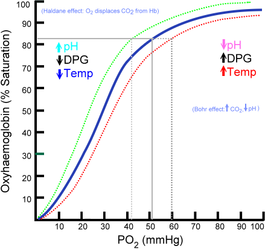
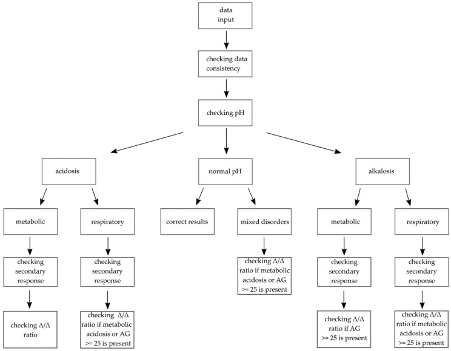

原理 Principle
血氣機真正直接測量的只有三個電極值：pH、PaCO₂、PaO₂。HCO₃⁻ 與 BE 是算出來的，所以與血清生化的 total CO₂ 會有小幅差異。
酸鹼那一軸的核心是 Henderson–Hasselbalch：血中 pH 由 **HCO₃⁻ 與 PaCO₂ 的「比值」**決定，不是任何一個的絕對值。由此直接推出三件事：
flowchart TD A["一管動脈血"] --> B["氧合這一軸"] A --> C["酸鹼通氣這一軸"] B --> D["PaO₂・SaO₂<br/>A-a gradient"] C --> E["PaCO₂<br/>肺排酸的速度"] C --> F["HCO₃⁻<br/>腎與代謝的緩衝"] E --> G["pH 由兩者比值決定<br/>不是絕對值"] F --> G D --> H["氧氣夠不夠"] G --> I["酸鹼失衡的種類"] classDef key fill:#263238,stroke:#000,color:#fff,font-weight:bold class H,I key

Oxyhemoglobin dissociation curve 的平台與陡坡：PaO₂ 約 60 mmHg 時 SaO₂ 約 90%，再往下便進入「PaO₂ 小幅下降、SaO₂ 快速墜落」的區段。酸中毒、PaCO₂↑、體溫↑、2,3-DPG↑使曲線右移、利於組織釋氧；相反條件與 fetal Hb／COHb 使曲線左移。注意：CO 中毒同時減少可用 Hb 位點，pulse oximeter 仍可能顯得正常。Source: Ratznium, Wikimedia Commons（public domain）。什麼時候做
- 當你想回答「這個病人的氧合到底夠不夠、還是只是 SpO₂ 看起來還好」時
- 當你想回答「他還喘得動嗎」——需要 PaCO₂ 與 pH 來決定要不要上非侵襲性通氣或插管時
- 當病人有不明原因的呼吸急促：呼吸快可能是在代償代謝性酸中毒，不是原發肺問題
- 當生化看到 HCO₃⁻ 或 AG 異常，需要知道呼吸端有沒有第二個障礙時
- 當意識改變而找不到原因（見 Delirium）——CO₂ 麻醉、嚴重酸中毒、CO 中毒都在這裡
- 當休克或高乳酸，需要量化灌流不足與酸鹼負荷時（見 Shock）
- 中毒：疑似水楊酸、甲醇、乙二醇——酸鹼型態本身就是診斷線索
怎麼做 / 病人準備
| 項目 | 內容 |
|---|---|
| 部位（首選） | 橈動脈——表淺、好定位、易壓迫止血、且手掌有尺動脈側枝循環。其次 brachial、femoral |
| Allen test | 傳統上在橈動脈穿刺前做，但證據薄弱：從未被證實能預測穿刺後的手部缺血。不要當成安全保證，也不該僅因結果「異常」就放棄採檢——真正的禁忌是該肢體循環明顯不良（見禁忌表） |
| 抗凝 | 用預先塗佈的乾燥肝素針筒。液體肝素過量會稀釋檢體 → PaCO₂ 與 HCO₃⁻ 假性下降、電解質失真 |
| 氣泡 | 抽完立刻排掉、立刻封口。氣泡的 PO₂ ≈150、PCO₂ ≈0，會把檢體往那個方向拉 |
| 時效與冰浴 | 塑膠針筒：室溫、30 分鐘內上機，不要冰——低溫下血球耗氧變慢、加上氧氣經管壁往內擴散 → PaO₂ 假性升高。要冰浴就必須換成玻璃針筒：「預期延遲超過 30 分鐘」是換玻璃針筒的理由，不是把塑膠針筒拿去冰的理由。例外：100% O₂ shunt test 等高 PaO₂ 檢體，塑膠針筒在室溫下 PaO₂ 掉得極快，要用玻璃針筒＋冰水＋盡快上機 |
| 止血 | 拔針後確實加壓 5 分鐘；抗凝／抗血小板治療中要更久 |
| 一定要記錄 | FiO₂（或氧氣流速）與體溫。沒有 FiO₂ 就算不出 A-a gradient，也算不出 P/F ratio——這是最常被漏掉的一格 |
| 病人狀態 | 疼痛、哭喊、換氣過度會讓 PaCO₂ 真的掉下來。等病人穩定再抽，否則數字代表的是當下那 30 秒 |
判讀 Interpretation
① 判讀六步驟（本篇的招牌）

酸鹼判讀骨架：先驗證資料、看 pH，再用 PaCO₂ 與 HCO₃⁻／SBE 定位呼吸性或代謝性原發障礙；「checking secondary response」就是把實測代償與預期公式比較，不足或過頭都代表 mixed disorder；有高 AG 代謝性酸中毒再走 Δ/Δ。正常 pH 也不能停，因為兩個相反方向的障礙可能互相抵消。Source: Pióro et al., J Clin Med 2021, Figure 2（CC BY 4.0）。- 看 pH → pH <7.35 是 acidemia、>7.45 是 alkalemia。pH 在正常範圍不能收工——可能是完全代償，也可能是兩個方向相反的障礙互相抵消。
- 看 PaCO₂ 與 HCO₃⁻，判原發障礙：哪一個往「能解釋這個 pH」的方向偏，哪一個就是原發（下表）。
- 算代償是否足夠（第 ② 節的公式表）。代償不足或過頭都代表還有第二個原發障礙。
- 只要有代謝性酸中毒 → 算 anion gap，並依白蛋白校正（第 ③ 節）。
- AG 升高 → 算 delta-delta（ΔAG/ΔHCO₃⁻），找出躲在後面的第二種代謝性障礙（第 ④ 節）。
- 對照臨床。數字與病人對不上時，先懷疑檢體不是動脈血、有氣泡、或延遲送檢，再懷疑病人。
| 原發障礙 | pH | 原發變化 | 代償方向 |
|---|---|---|---|
| 代謝性酸中毒 | ↓ | HCO₃⁻ ↓ | PaCO₂ ↓（過度換氣，分鐘級） |
| 代謝性鹼中毒 | ↑ | HCO₃⁻ ↑ | PaCO₂ ↑（換氣抑制） |
| 呼吸性酸中毒 | ↓ | PaCO₂ ↑ | HCO₃⁻ ↑（腎，數天） |
| 呼吸性鹼中毒 | ↑ | PaCO₂ ↓ | HCO₃⁻ ↓（腎，數天） |
② 代償公式表 —— 本篇最不能背錯的一格
| 原發障礙 | 預期代償 |
|---|---|
| 代謝性酸中毒 | Winter's formula：預期 PaCO₂ ＝ 1.5 × HCO₃⁻ ＋ 8 ± 2 |
| 代謝性鹼中毒 | HCO₃⁻ 每上升 1 mEq/L → PaCO₂ 上升約 0.7 mmHg |
| 急性呼吸性酸中毒 | PaCO₂ 每上升 10 mmHg → HCO₃⁻ 上升 1 mEq/L |
| 慢性呼吸性酸中毒 | PaCO₂ 每上升 10 mmHg → HCO₃⁻ 上升 3–4 mEq/L |
| 急性呼吸性鹼中毒 | PaCO₂ 每下降 10 mmHg → HCO₃⁻ 下降 2 mEq/L |
| 慢性呼吸性鹼中毒 | PaCO₂ 每下降 10 mmHg → HCO₃⁻ 下降 4–5 mEq/L |
③ Anion gap 與白蛋白校正
AG ＝ Na⁺ − (Cl⁻ ＋ HCO₃⁻)，正常約 8–12 mEq/L（各實驗室不同，現代離子選擇電極的正常區間偏低，有的是 3–11——用自家的值）。
④ Delta-delta（ΔAG / ΔHCO₃⁻）
ΔAG ＝ 實測 AG − 12；ΔHCO₃⁻ ＝ 24 − 實測 HCO₃⁻。用意：高 AG 酸中毒每產生 1 個未測量陰離子，理論上就消耗 1 個 HCO₃⁻。兩者不成比例 ＝ 還有第二種代謝性障礙。
| ΔAG/ΔHCO₃⁻ | 代表 |
|---|---|
| <0.4 | 幾乎是純正常 AG（高血氯型）代謝性酸中毒 |
| 0.4–0.8 | 高 AG 酸中毒 ＋ 正常 AG 酸中毒併存 |
| 0.8–2.0 | 單純的高 AG 代謝性酸中毒 |
| >2.0 | 高 AG 酸中毒 ＋ 合併代謝性鹼中毒（或慢性呼吸性酸中毒墊高的 HCO₃⁻ 底線） |
⑤ 病因分類表
| 分類 | 病因 |
|---|---|
| 高 AG 代謝性酸中毒 口訣 GOLD MARK |
Glycols（乙二醇 ethylene glycol、丙二醇 propylene glycol）／Oxoproline（5-oxoproline，長期使用 acetaminophen）／L-lactate（Shock、Sepsis↗、腸缺血）／D-lactate（短腸症、細菌過度增生）／Methanol／Aspirin（Salicylate poisoning↗）／Renal failure（尿毒，見 Acute kidney injury、Dialysis）／Ketoacidosis（DKA、酒精性、飢餓性） |
| 正常 AG（高血氯型） 代謝性酸中毒 |
腸道流失 HCO₃⁻：腹瀉、小腸／胰臟廔管、輸尿管腸道改道 腎臟：renal tubular acidosis (RTA)——第 1 型（遠端）低血鉀＋尿 pH > 5.5、第 2 型（近端）低血鉀＋酸中毒穩定後尿 pH < 5.5、第 4 型（低醛固酮）高血鉀＋尿 pH < 5.5（只有第 4 型是高血鉀，這是最快的分型線索）／acetazolamide／早期腎衰竭 醫源性：大量 0.9% 生理食鹽水（氯負荷）、全靜脈營養 |
| 代謝性鹼中毒 依尿氯 (urine Cl⁻) 分兩型 |
Chloride-responsive（尿 Cl⁻ <20 mEq/L）：嘔吐、鼻胃管引流、利尿劑停用後、post-hypercapnia、大量流汗（囊性纖維化）→ 給生理食鹽水就會好 Chloride-resistant（尿 Cl⁻ >20 mEq/L）：原發性醛固酮增多症、Cushing、嚴重低血鉀、Bartter／Gitelman、甘草、正在使用中的利尿劑 → 給食鹽水無效，要處理病因與補鉀 |
| 呼吸性酸中毒（通氣不足） | 中樞抑制（鴉片、鎮靜劑、腦幹病灶）／神經肌肉（Guillain–Barré、重症肌無力、ALS、高位頸髓）／胸壁與呼吸肌（肥胖低通氣、脊柱側彎、疲乏）／氣道與肺（COPD↗ 急性惡化、嚴重氣喘、末期肺實質病變） |
| 呼吸性鹼中毒（換氣過度） | 疼痛、焦慮／低血氧驅動（任何低氧原因）／Sepsis↗ 早期／肺栓塞／肝衰竭／懷孕（progesterone）／水楊酸（直接刺激呼吸中樞）／中樞神經病灶／機械通氣設定過強 |
⑥ 氧合這一軸（與上面完全獨立）
| 低血氧機制 | A-a gradient | 給氧會不會改善 | 典型情境 |
|---|---|---|---|
| V/Q mismatch（最常見） | 升高 | 會，而且明顯 | COPD↗、氣喘、Pneumonia、肺栓塞 |
| Shunt | 升高 | 不會／改善極有限 ← 關鍵鑑別 | 肺泡完全塌陷或積滿（ARDS、肺葉實變、肺水腫）、心內右到左分流、動靜脈畸形 |
| Hypoventilation | 正常 | 會（但只改善缺氧，不改善 PaCO₂，甚至可能惡化） | 鴉片／鎮靜劑過量、神經肌肉無力、肥胖低通氣症候群、高位頸髓損傷 |
| Diffusion limitation | 升高 | 會 | 間質性肺病；運動時才顯現 |
| 吸入氧分壓低 | 正常 | 會（給氧即解） | 高海拔、氧氣管路脫落 |
P/F ratio ＝ PaO₂ / FiO₂（FiO₂ 用小數，如 0.5）。正常 >400。ARDS（Berlin）分級：輕度 200–300、中度 100–200、重度 ≤100，且需 PEEP ≥5 cmH₂O。P/F 的價值是跨 FiO₂ 比較——單看 PaO₂ 無法比較「FiO₂ 0.3 的 80」與「FiO₂ 1.0 的 80」。2023 新全球定義另可用 SpO₂/FiO₂ ≤ 315 取代 P/F、並納入 HFNO ≥ 30 L/min 的病人。
干擾與偽陽性
| 會讓結果失真的因素 | 往哪個方向偏 |
|---|---|
| 檢體有氣泡 | PaO₂ 假性升高（當實際 PaO₂ <150 時）、PaCO₂ 假性下降、pH 假性上升 |
| 液體肝素過量（稀釋） | PaCO₂ ↓、HCO₃⁻ ↓、電解質（尤其 K⁺、Ca²⁺）失真；pH 受影響較小 |
| 送檢延遲（室溫放太久） | 血球持續代謝：PaO₂ ↓、PaCO₂ ↑、pH ↓、lactate ↑ |
| 白血球或血小板極高（白血病、WBC > 100 ×10⁹/L；血小板 > 1,000 ×10⁹/L） leukocyte larceny |
PaO₂ 假性下降（血球在管內持續耗氧）。線索：病人不喘、SpO₂ 正常，但 ABG 顯示嚴重低血氧——這時候要相信 SpO₂。處置：① 床邊立刻上機（最有效）→ ② 需延遲時改玻璃針筒＋冰浴；不要把塑膠針筒拿去冰，那會反向造成 PaO₂ 假性升高 |
| 塑膠針筒冰浴或冰浴過久 | 氧氣經管壁擴散進入 → PaO₂ 假性升高；正常範圍 PaO₂ 的檢體最明顯 |
| 誤抽到靜脈血 | PaO₂ 明顯偏低、PaCO₂ 偏高、pH 偏低 → 會被誤判成呼吸衰竭。線索：血色暗、不搏動、數值與臨床完全對不上 |
| 病人哭喊、疼痛、過度換氣 | PaCO₂ 真的下降——不是誤差，但不代表病人的基礎狀態 |
| 嚴重低體溫未校正 | 機器在 37°C 測量：實際病人體內 pH 偏高、PaCO₂ 偏低 |
與相關檢查的取捨
| 檢查 | 優點 | 缺點 | 什麼時候選它 |
|---|---|---|---|
| ABG（本篇） | 唯一同時給氧合＋酸鹼＋通氣的完整答案 | 侵入性、痛、需壓迫止血、有血管併發症 | 需要知道真實 PaO₂、或需要精準的 PaCO₂／pH 來決定插管與否 |
| VBG | 好取、可與抽血一併完成、併發症少 | 見右欄 | 只要問題是酸鹼（DKA、腎衰竭、篩檢酸中毒）→ VBG 幾乎都夠 |
| Pulse oximetry（SpO₂） | 連續、非侵入、即時 | 完全不反映通氣（PaCO₂）；COHb → SpO₂ 假性偏高、MetHb → SpO₂ 卡在約 85%（與實際濃度脫鉤，5% 與 40% 都讀 85%）；兩者共同線索是 saturation gap（ABG 算出的 SaO₂ 正常，co-oximetry 實測低）；灌流差、低體溫、深色指甲油、嚴重貧血時失準 | 常規監測與趨勢，不能拿來排除通氣衰竭或中毒 |
| Capnography（EtCO₂） | 連續看通氣趨勢、確認氣管內管位置、CPR 品質指標 | EtCO₂ 與 PaCO₂ 之間有死腔造成的落差；休克、肺栓塞、低心輸出時落差擴大 | 鎮靜監測、插管確認、通氣趨勢；不取代單次精準值 |
| 血清電解質算 AG | 不必動脈穿刺就能算出 AG，還附帶 Na／K／Cl／albumin | 沒有 pH 與 PaCO₂ → 判不出代償、判不出呼吸性成分 | 一定要與血氣搭配；它是第 4、5 步的原料來源 |
| Co-oximetry（血液） | 確診 COHb 與 MetHb 的標準（多波長直接實測，不是推估） | 需要特定機型 | 疑似 CO 中毒、疑似 methemoglobinemia、SpO₂ 與臨床對不上時。篩檢可用非侵入式 pulse CO-oximetry（SpCO／SpMet），異常仍要抽血確認 |
禁忌與陷阱
相關連結
- Dyspnea · Delirium — 主訴層入口
- Shock · Heart failure · Anemia — 氧輸送與灌流
- COPD↗ · Pneumonia — 呼吸性酸中毒、V/Q
- DKA · Salicylate poisoning↗ · Acute kidney injury · Dialysis — 高 AG 酸中毒
- Hypercalcemia — milk-alkali
- 禁忌選項 — 上表已收錄